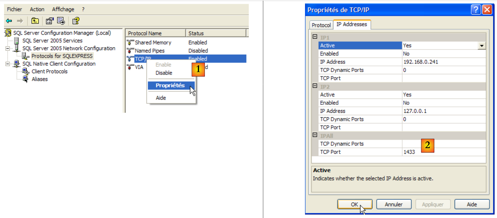
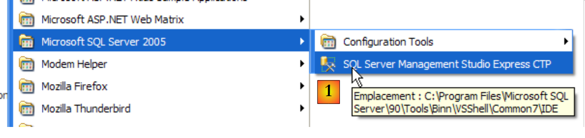
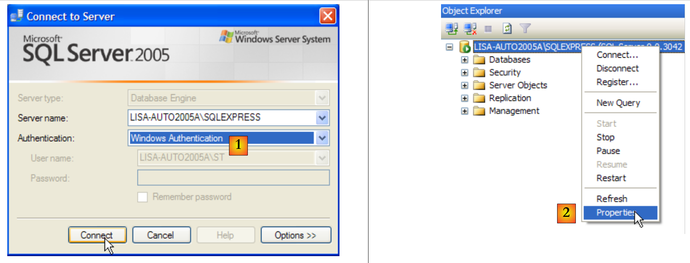
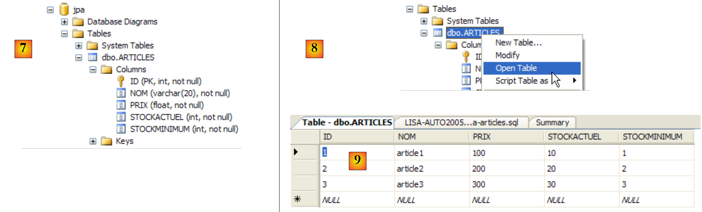
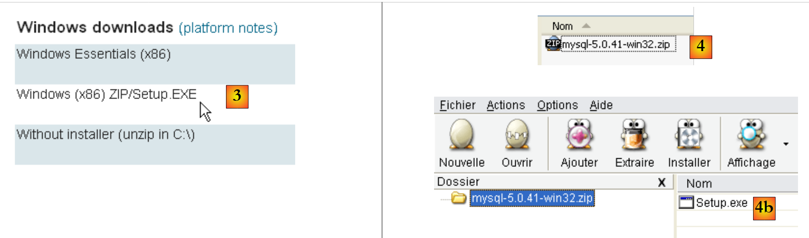
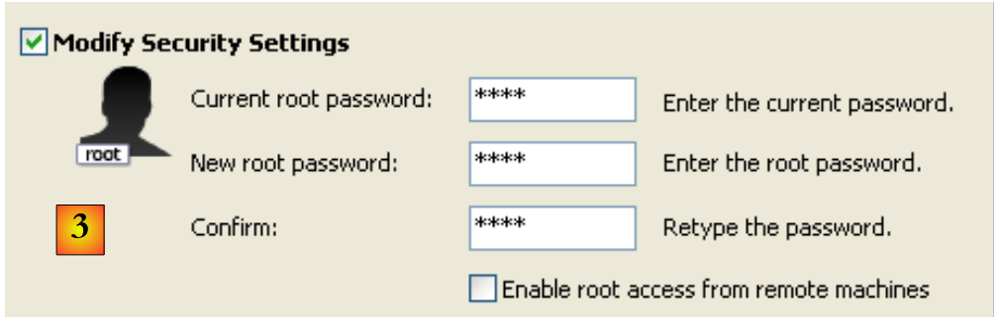
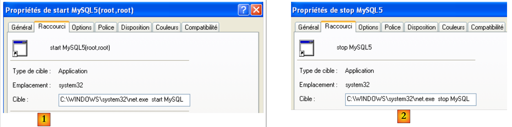
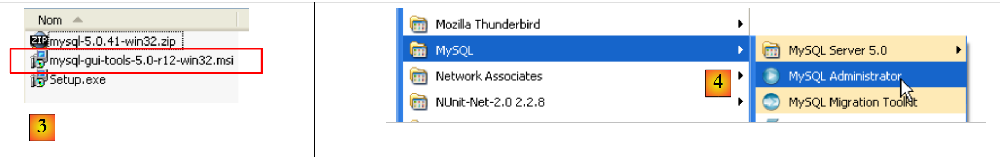

14. Anexos
14.1. El SGBD e SQL Server Express 2005
14.1.1. Instalación
El documento SGBD SQL Server Express 2005 está disponible en la URL [http://msdn.microsoft.com/vstudio/express/sql/download/]:
 |
- en [1]: primero descarga e instala la plataforma .NET 2.0
- en [2]: a continuación, instalar y descargar SQL Server Express 2005
- en [3]: a continuación, instalar y descargar SQL Server Management Studio Express, que permite administrar SQL Server
La instalación de SQL Server Express crea una carpeta en [Démarrer / Programmes ]:
 |
- en [1]: la aplicación de configuración de SQL Server. También permite iniciar y detener el servidor
- en [2]: la aplicación de administración del servidor
14.1.2. Iniciar/detener el servidor SQL
Al igual que en los casos anteriores de SGBD, el servidor SQL Express se ha instalado como un servicio de Windows de inicio automático. Modificamos esta configuración:
[Démarrer / Panneau de configuration / Performances et maintenance / Outils d'administration / Services ]:
 |
- por [1]: hacemos doble clic en [Services]
- en [2]: vemos que hay un servicio llamado [SQL Server], que está en marcha ([3]) y que su inicio es automático ([4]).
- en [5]: otro servicio relacionado con SQL Server, denominado «SQL Server Browser», también está activo y se inicia automáticamente.
Para modificar este comportamiento, hacemos doble clic en el servicio [SQL Server]:
 |
- en [1]: configuramos el servicio para que se inicie manualmente
- en [2]: lo detenemos
- en [3]: confirmamos la nueva configuración del servicio
Se procederá de la misma manera con el servicio [SQL Server Browser] (véase [5] más arriba). Para iniciar y detener manualmente el servicio SQL de Server 2005, se puede utilizar la aplicación [1] de la carpeta [SQL server]:
 |
 |
- en [1]: asegúrese de que el protocolo TCP/IP esté activo (enabled) y, a continuación, acceda a las propiedades del protocolo.
- en [2]: en la pestaña [IP Addresses], opción [IPAll]:
- el campo [TCP Dynamic ports] se deja vacío
- el puerto de escucha del servidor se establece en 1433 en [TCP Port]
 |
- en [3]: al hacer clic con el botón derecho del ratón sobre el servicio [SQL Server] se accede a las opciones de inicio y parada del servidor. En este caso, lo iniciamos.
- en [4]: Se ha iniciado el servidor SQL
14.1.3. Creación de un usuario jpa y de una base de datos jpa
Ejecutemos el proceso SGBD tal y como se ha indicado anteriormente y, a continuación, la aplicación de administración [1] a través del menú que aparece a continuación:
 |
 |
- en [1]: nos conectamos al servidor SQL como administrador de Windows
- en [2]: se configuran las propiedades de la conexión
 |
- en [3]: se habilita un modo mixto de conexión al servidor: bien con un inicio de sesión de Windows (un usuario de Windows), bien con un inicio de sesión de SQL Server (cuenta definida en SQL Server, independiente de cualquier cuenta de Windows).
- en [3b]: se crea un usuario del servidor SQL
 |
- en [4]: opción [General]
- en [5]: el nombre de usuario
- en [6]: la contraseña (jpa aquí)
- en [7]: opción [Server Roles]
- en [8]: el usuario «jpa» tendrá permiso para crear bases de datos
Validamos esta configuración:
 |
- en [9]: se ha creado el usuario «jpa»
- en [10]: nos desconectamos
- en [11]: volvemos a conectarnos
 |
- en [12]: se inicia sesión como usuario jpa/jpa
- en [13]: una vez conectado, el usuario jpa crea una base de datos
 |
- en [14]: la base se llamará jpa
- en [15]: y pertenecerá al usuario jpa
- en [16]: se ha creado la base de datos jpa
14.1.4. Creación de la tabla [ARTICLES] de la base de datos jpa
Creamos una tabla [ARTICLES] a partir del siguiente script SQL:
/* creación de tabla */
CREATE TABLE ARTICLES (
ID INTEGER NOT NULL,
NOM VARCHAR(20) NOT NULL,
PRIX DOUBLE PRECISION NOT NULL,
STOCKACTUEL INTEGER NOT NULL,
STOCKMINIMUM INTEGER NOT NULL
);
INSERT INTO ARTICLES (ID, NOM, PRIX, STOCKACTUEL, STOCKMINIMUM) VALUES (1, 'article1', 100, 10, 1);
INSERT INTO ARTICLES (ID, NOM, PRIX, STOCKACTUEL, STOCKMINIMUM) VALUES (2, 'article2', 200, 20, 2);
INSERT INTO ARTICLES (ID, NOM, PRIX, STOCKACTUEL, STOCKMINIMUM) VALUES (3, 'article3', 300, 30, 3);
/* restricciones de integridad */
ALTER TABLE ARTICLES ADD CONSTRAINT CHK_ID check (ID>0);
ALTER TABLE ARTICLES ADD CONSTRAINT CHK_PRIX check (PRIX>0);
ALTER TABLE ARTICLES ADD CONSTRAINT CHK_STOCKACTUEL check (STOCKACTUEL>0);
ALTER TABLE ARTICLES ADD CONSTRAINT CHK_STOCKMINIMUM check (STOCKMINIMUM>0);
ALTER TABLE ARTICLES ADD CONSTRAINT CHK_NOM check (NOM<>'');
ALTER TABLE ARTICLES ADD CONSTRAINT UNQ_NOM UNIQUE (NOM);
/* clave primaria */
ALTER TABLE ARTICLES ADD CONSTRAINT PK_ARTICLES PRIMARY KEY (ID);
 |
- en [1]: se abre un script SQL
- en [2]: se selecciona el script SQL
- en [3]: hay que volver a identificarse (jpa/jpa)
- en [4]: el script que se va a ejecutar
- en [5]: seleccionar la base de datos en la que se ejecutará el script
- en [6]: ejecutarlo
 |
- en [7]: el resultado de la ejecución: se ha creado la tabla [ARTICLES].
- en [8]: se solicita ver su contenido
- en [9]: el contenido de la tabla.
14.1.5. El conector ADO.NET de SQL Server Express
 |
El conector ADO.NET es el conjunto de clases que permiten a una aplicación .NET utilizar el SGBD SQL Server Express 2005. Las clases del conector se encuentran en el espacio de nombres [System.Data], disponible de forma nativa en todas las plataformas .NET.
14.2. El SGBD MySQL5
14.2.1. Instalación
El SGBD MySQL5 está disponible en la URL [http://dev.mysql.com/downloads/]:
 |
- en [1]: elige la versión que desees
- en [2]: elige una versión de Windows
 |
- en [3]: elige la versión de Windows que desees
- en [4]: el archivo ZIP descargado contiene un ejecutable [Setup.exe] [4b] que hay que extraer y ejecutar para instalar MySQL5
 |
- en [5]: elige una instalación típica
- en [6]: una vez finalizada la instalación, se puede configurar el servidor MySQL5
 |
- en [7]: elegir una configuración estándar, la que plantea menos preguntas
- en [8]: el servidor MySQL5 será un servicio de Windows
 |
- en [9]: por defecto, el administrador del servidor es «root» sin contraseña. Se puede mantener esta configuración o asignar una nueva contraseña a «root». Si la instalación de MySQL5 se realiza tras la desinstalación de una versión anterior, esta operación puede fallar. Hay menos formas de revertirla.
- en [10]: se solicita la configuración del servidor
La instalación de MySQL5 crea una carpeta en [Démarrer / Programmes ]:

Se puede utilizar [MySQL Server Instance Config Wizard] para reconfigurar el servidor:
 |
 |
 |
- en [3]: cambiamos la contraseña de root (en este caso, root/root)
14.2.2. Iniciar/Detener MySQL5
El servidor MySQL5 se ha instalado como un servicio de Windows de inicio automático, c.a.d se inicia nada más arrancar Windows. Este modo de funcionamiento resulta poco práctico. Vamos a cambiarlo:
[Démarrer / Panneau de configuration / Performances et maintenance / Outils d'administration / Services ]:
 |
- en [1]: hacemos doble clic en [Services]
- en [2]: vemos que hay un servicio llamado [MySQL], que está en marcha ([3]) y que su inicio es automático ([4]).
Para modificar este comportamiento, hacemos doble clic en el servicio [MySQL]:
 |
- en [1]: configuramos el servicio para que se inicie manualmente
- en [2]: lo detenemos
- en [3]: confirmamos la nueva configuración del servicio
Para iniciar y detener manualmente el servicio MySQL, se pueden crear dos accesos directos:
 |
- en [1]: el acceso directo para iniciar MySQL5
- y [2]: el acceso directo para detenerlo
14.2.3. Clientes de administración de MySQL
En la página web de MySQL se pueden encontrar clientes de administración de SGBD:
 |
- en [1]: elige [MySQL GUI Tools], que reúne varios clientes gráficos que permiten tanto administrar el SGBD como utilizarlo
- en [2]: elegir la versión de Windows adecuada
 |
- en [3]: se descarga un archivo .msi que hay que ejecutar
- en [4]: una vez realizada la instalación, aparecerán nuevos accesos directos en la carpeta [Menu Démarrer / Programmes / mySQL].
Ejecutemos MySQL (a través de los accesos directos que has creado) y, a continuación, ejecutemos [MySQL Administrator] desde el menú anterior:
 |
- en [1]: introduce la contraseña del usuario root (en este caso, «root»)
- en [2]: ya estamos conectados y vemos que MySQL está activo
14.2.4. Creación de un usuario «jpa» y una base de datos «jpa»
Ahora creamos una base de datos llamada jpa y un usuario con el mismo nombre. Primero, el usuario:
 |
- en [1]: seleccionamos [User Administration]
- en [2]: hacemos clic con el botón derecho en la parte [User accounts] para crear un nuevo usuario
- en [3]: el usuario se llama jpa y su contraseña es jpa
- en [4]: se confirma la creación
- en [5]: el usuario [jpa] aparece en la ventana [User Accounts]
Ahora, la base de datos:
 |
- en [1]: selección de la opción [Catalogs]
- en [2]: clic con el botón derecho del ratón en la ventana [Schemata] para crear un nuevo esquema (que designa una base de datos)
- en [3]: se le da nombre al nuevo esquema
- en [4]: aparece en la ventana [Schemata]
 |
- en [5]: se selecciona el esquema [jpa]
- en [6]: aparecen los objetos del esquema [jpa], en particular las tablas. Todavía no hay ninguna. Con un clic con el botón derecho se podrían crear. Dejamos que el lector lo haga.
Volvamos al usuario [jpa] para concederle todos los derechos sobre el esquema [jpa]:
 |
- en [1] y, a continuación, en [2]: seleccionamos el usuario [jpa]
- en [3]: se selecciona la pestaña [Schema Privileges]
- en [4]: se selecciona el esquema [jpa]
- en [5]: vamos a otorgar al usuario [jpa] todos los privilegios sobre el esquema [jpa]
 |
- a [6]: se validan los cambios realizados
Para comprobar que el usuario [jpa] puede trabajar con el esquema [jpa], cerramos el administrador MySQL. Lo reiniciamos y, esta vez, iniciamos sesión con el nombre [jpa/jpa]:
 |
- en [1]: nos identificamos (jpa/jpa)
- en [2]: la conexión se ha realizado correctamente y, en [Schemata], vemos los esquemas sobre los que tenemos derechos. Vemos el esquema [jpa].
Ahora vamos a crear una tabla [ARTICLES] mediante un script SQL.
 |
- en [1]: utilizar la aplicación [MySQL Query Browser]
- en [2], [3], [4]: iniciar sesión (jpa / jpa / jpa)
 |
- en [5]: abrir un script SQL para ejecutarlo
- en [6]: especificar el script [schema-articles.sql] siguiente:
 |
- en [7]: el script cargado
- en [8]: se ejecuta
- en [9]: se ha creado la tabla [ARTICLES]
14.2.5. Instalación del conector ADO.NET desde MySQL5
El conector ADO.NET de MySQL5 está disponible (abril de 2008) en la dirección [http://dev.mysql.com/downloads/connector/net/5.1.html]:
 |
La instalación de este conector añade un espacio de nombres a la plataforma .NET:
14.2.6. Instalación del controlador « » ODBC « » de MySQL5
El conector ODBC (Open DataBase Connectivity) de MySQL5 está disponible (abril de 2008) en la dirección [http://dev.mysql.com/downloads/connector/odbc/3.51.html]:
 |  |
Tras la instalación, se puede comprobar la presencia del conector ODBC de la siguiente manera:
 |
- en [1], selecciona [Outils d'administration] (en XP Pro: Menú Inicio / Panel de control / Rendimiento y mantenimiento / Herramientas administrativas)
- en [2], haga doble clic en [Sources de données (ODBC)]
- en [3], selecciona la pestaña [Pilotes ODBC]
- en [4], el controlador ODBC de MySQL